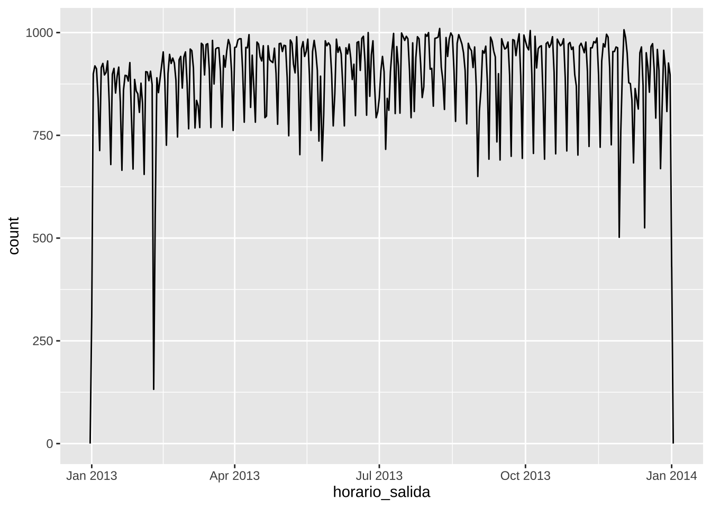

Capítulo24 Fechas, horas y minutas
Fecha de la ultima revisión
## [1] "2024-10-03"El tema proviene de los siguientes sitios.
English: https://r4ds.had.co.nz/dates-and-times.html
Español: https://es.r4ds.hadley.nz/16-datetimes.html
24.2 Creando fechas/horas
- date,
- time,
- date-time,
https://github.com/edgararuiz/guias-rapidas/blob/master/fechas.pdf
24.3 El paquete lubridate
La función today() regresa la fecha de hoy, similar a Sys.date()
## [1] "2024-10-03"Usames tibble(), del paquete tibble, para crear una tabla manualmente
fechas <- tribble(
~ codigo, ~ fecha,
"001", "01/01/2019 00:00:00",
"002", "31/03/2019 01:05:00",
"003", "14/06/2019 20:00:00",
"004", "01/12/1859 11:32:13"
)
fechas## # A tibble: 4 × 2
## codigo fecha
## <chr> <chr>
## 1 001 01/01/2019 00:00:00
## 2 002 31/03/2019 01:05:00
## 3 003 14/06/2019 20:00:00
## 4 004 01/12/1859 11:32:13Hay varias opciones para convertir texto a fechas, el más usado es mdy_hms(), pero en este caso el formato utilizado no funciona bien.
24.3.1 Un error tipico
## # A tibble: 4 × 2
## codigo fecha
## <chr> <dttm>
## 1 001 2019-01-01 00:00:00
## 2 002 NA
## 3 003 NA
## 4 004 1859-01-12 11:32:13Ya que el día es el primero, y no el mes, usamos dmy_hms()
## # A tibble: 4 × 2
## codigo fecha
## <chr> <dttm>
## 1 001 2019-01-01 00:00:00
## 2 002 2019-03-31 01:05:00
## 3 003 2019-06-14 20:00:00
## 4 004 1859-12-01 11:32:13lubridate tiene varias funciones para extraer partes de la fecha, por ejemplo: año, mes, día, hora, minuto, y quatrimestre.
nueva_fechas %>%
mutate(a = year(fecha),
m = month(fecha),
d = day(fecha),
h = hour(fecha),
mn = minute(fecha),
q = quarter(fecha)
)## # A tibble: 4 × 8
## codigo fecha a m d h mn q
## <chr> <dttm> <int> <int> <int> <int> <int> <int>
## 1 001 2019-01-01 00:00:00 2019 1 1 0 0 1
## 2 002 2019-03-31 01:05:00 2019 3 31 1 5 1
## 3 003 2019-06-14 20:00:00 2019 6 14 20 0 2
## 4 004 1859-12-01 11:32:13 1859 12 1 11 32 4Las funciones round_date(), ceiling_date() y floor_date() permiten redondear la fecha al número más cercano de la unidad especificada
nueva_fechas %>%
mutate(
redondear = round_date(fecha, unit = " month"),
techo = ceiling_date(fecha, unit = "day"),
suelo = floor_date(fecha, unit = "month"),
suelo_hour= floor_date(fecha, unit = "hour")
)## # A tibble: 4 × 6
## codigo fecha redondear techo
## <chr> <dttm> <dttm> <dttm>
## 1 001 2019-01-01 00:00:00 2019-01-01 00:00:00 2019-01-01 00:00:00
## 2 002 2019-03-31 01:05:00 2019-04-01 00:00:00 2019-04-01 00:00:00
## 3 003 2019-06-14 20:00:00 2019-06-01 00:00:00 2019-06-15 00:00:00
## 4 004 1859-12-01 11:32:13 1859-12-01 00:00:00 1859-12-02 00:00:00
## # ℹ 2 more variables: suelo <dttm>, suelo_hour <dttm>24.4 Intervalos y duraciones
La función interval() crea un objeto R de intervalo de tiempo. En este caso, el intervalo entro la fecha en la tabla, y el día de hoy. Nota que esto puede ser muy util si quiere calcular la cantidad de tiempo entre dos fechas.
## # A tibble: 4 × 3
## codigo fecha intervalo
## <chr> <dttm> <Interval>
## 1 001 2019-01-01 00:00:00 2019-01-01 00:00:00 UTC--2024-10-03 UTC
## 2 002 2019-03-31 01:05:00 2019-03-31 01:05:00 UTC--2024-10-03 UTC
## 3 003 2019-06-14 20:00:00 2019-06-14 20:00:00 UTC--2024-10-03 UTC
## 4 004 1859-12-01 11:32:13 1859-12-01 11:32:13 UTC--2024-10-03 UTCint_length() regresa el número de segundos dentro del intervalo
## # A tibble: 4 × 4
## codigo fecha intervalo segundos
## <chr> <dttm> <Interval> <dbl>
## 1 001 2019-01-01 00:00:00 2019-01-01 00:00:00 UTC--2024-10-03 UTC 181612800
## 2 002 2019-03-31 01:05:00 2019-03-31 01:05:00 UTC--2024-10-03 UTC 173919300
## 3 003 2019-06-14 20:00:00 2019-06-14 20:00:00 UTC--2024-10-03 UTC 167371200
## 4 004 1859-12-01 11:32:13 1859-12-01 11:32:13 UTC--2024-10-03 UTC 520184326724.5 El operador %--% simplifica el cálculo del intervalo
Compara con el script anterior
## # A tibble: 4 × 3
## codigo fecha intervalo
## <chr> <dttm> <Interval>
## 1 001 2019-01-01 00:00:00 2019-01-01 00:00:00 UTC--2024-10-03 UTC
## 2 002 2019-03-31 01:05:00 2019-03-31 01:05:00 UTC--2024-10-03 UTC
## 3 003 2019-06-14 20:00:00 2019-06-14 20:00:00 UTC--2024-10-03 UTC
## 4 004 1859-12-01 11:32:13 1859-12-01 11:32:13 UTC--2024-10-03 UTCPara saber el número del días en el intervalo, divida el intervalo por la función que corresponde a días, days()
## # A tibble: 4 × 3
## codigo fecha dias
## <chr> <dttm> <dbl>
## 1 001 2019-01-01 00:00:00 2102
## 2 002 2019-03-31 01:05:00 2013.
## 3 003 2019-06-14 20:00:00 1937.
## 4 004 1859-12-01 11:32:13 60207.Intervalo entre una lista de fecha y otra fecha y hora
## # A tibble: 4 × 3
## codigo fecha dias
## <chr> <dttm> <dbl>
## 1 001 2019-01-01 00:00:00 365
## 2 002 2019-03-31 01:05:00 276.
## 3 003 2019-06-14 20:00:00 200.
## 4 004 1859-12-01 11:32:13 58470.24.6 Ejercicio
Usa esta función y calcula el número de día que ha transcurido entre el día de su nacimiento y el dia de hoy
## [1] 2242## [1] 193708800000Los resultados se pueden visualizar usando ggplot2
nueva_fechas %>%
mutate(dias = fecha %--% today() / days()) %>%
ggplot() +
geom_col(aes(codigo, dias)) +
coord_flip()
24.7 as.duration
as.duration() crea un objecto en R que contiene la duración del intervalo de tiempo.
## # A tibble: 4 × 3
## codigo fecha desde_hoy
## <chr> <dttm> <Duration>
## 1 001 2019-01-01 00:00:00 181612800s (~5.75 years)
## 2 002 2019-03-31 01:05:00 173919300s (~5.51 years)
## 3 003 2019-06-14 20:00:00 167371200s (~5.3 years)
## 4 004 1859-12-01 11:32:13 5201843267s (~164.84 years)El objeto de duración de tiempo se puede filtrar fácilmente basado en una variedad de tipo de tiempos. En este caso, semanas dweeks() crea un objeto de duración de la largura especificada
nueva_fechas %>%
mutate(desde_hoy = as.duration(fecha %--% today())) %>%
filter(desde_hoy < dyears(100))## # A tibble: 3 × 3
## codigo fecha desde_hoy
## <chr> <dttm> <Duration>
## 1 001 2019-01-01 00:00:00 181612800s (~5.75 years)
## 2 002 2019-03-31 01:05:00 173919300s (~5.51 years)
## 3 003 2019-06-14 20:00:00 167371200s (~5.3 years)Otra opción es ddays().
nueva_fechas %>%
mutate(desde_hoy = as.duration(fecha %--% today())) %>%
filter(desde_hoy < ddays(2500)) # Note that you filter for the number of days that have acculmulated## # A tibble: 3 × 3
## codigo fecha desde_hoy
## <chr> <dttm> <Duration>
## 1 001 2019-01-01 00:00:00 181612800s (~5.75 years)
## 2 002 2019-03-31 01:05:00 173919300s (~5.51 years)
## 3 003 2019-06-14 20:00:00 167371200s (~5.3 years)24.8 Crear una fecha desde columnas individuales
- make_date()
- make_datetime()
Unir el año, mes, día, hora y minutos que esten en diferentes columnas en uno
## # A tibble: 6 × 19
## anio mes dia horario_salida salida_programada atraso_salida
## <int> <int> <int> <int> <int> <dbl>
## 1 2013 1 1 517 515 2
## 2 2013 1 1 533 529 4
## 3 2013 1 1 542 540 2
## 4 2013 1 1 544 545 -1
## 5 2013 1 1 554 600 -6
## 6 2013 1 1 554 558 -4
## # ℹ 13 more variables: horario_llegada <int>, llegada_programada <int>,
## # atraso_llegada <dbl>, aerolinea <chr>, vuelo <int>, codigo_cola <chr>,
## # origen <chr>, destino <chr>, tiempo_vuelo <dbl>, distancia <dbl>,
## # hora <dbl>, minuto <dbl>, fecha_hora <dttm>vuelos %>%
dplyr::select(anio, mes, dia, hora, minuto) %>%
mutate(salida = make_datetime(anio, mes, dia, hora, minuto))## # A tibble: 336,776 × 6
## anio mes dia hora minuto salida
## <int> <int> <int> <dbl> <dbl> <dttm>
## 1 2013 1 1 5 15 2013-01-01 05:15:00
## 2 2013 1 1 5 29 2013-01-01 05:29:00
## 3 2013 1 1 5 40 2013-01-01 05:40:00
## 4 2013 1 1 5 45 2013-01-01 05:45:00
## 5 2013 1 1 6 0 2013-01-01 06:00:00
## 6 2013 1 1 5 58 2013-01-01 05:58:00
## 7 2013 1 1 6 0 2013-01-01 06:00:00
## 8 2013 1 1 6 0 2013-01-01 06:00:00
## 9 2013 1 1 6 0 2013-01-01 06:00:00
## 10 2013 1 1 6 0 2013-01-01 06:00:00
## # ℹ 336,766 more rowsUnir el año, mes, día, hora que esten en diferentes columnas en uno
vuelos %>%
dplyr::select(anio, mes, dia, hora, minuto) %>%
mutate(salida2 = make_date(anio, mes, dia))## # A tibble: 336,776 × 6
## anio mes dia hora minuto salida2
## <int> <int> <int> <dbl> <dbl> <date>
## 1 2013 1 1 5 15 2013-01-01
## 2 2013 1 1 5 29 2013-01-01
## 3 2013 1 1 5 40 2013-01-01
## 4 2013 1 1 5 45 2013-01-01
## 5 2013 1 1 6 0 2013-01-01
## 6 2013 1 1 5 58 2013-01-01
## 7 2013 1 1 6 0 2013-01-01
## 8 2013 1 1 6 0 2013-01-01
## 9 2013 1 1 6 0 2013-01-01
## 10 2013 1 1 6 0 2013-01-01
## # ℹ 336,766 more rows24.9 %/%: integer division
vuelos |> dplyr::select(tiempo_vuelo) |>
mutate(t=tiempo_vuelo %/% 100) |> # Division
mutate(m= tiempo_vuelo %% 100) # modulus... Cambia el 100 para 1, 10, 1000... y mira cual es el resultado## # A tibble: 336,776 × 3
## tiempo_vuelo t m
## <dbl> <dbl> <dbl>
## 1 227 2 27
## 2 227 2 27
## 3 160 1 60
## 4 183 1 83
## 5 116 1 16
## 6 150 1 50
## 7 158 1 58
## 8 53 0 53
## 9 140 1 40
## 10 138 1 38
## # ℹ 336,766 more rows24.10 The %% operator returns the modulus (remainder) of a division operation.
- For instance, 5 %% 2 would return 1, as the remainder of 5 divided by 2 is 1.
## [1] "anio" "mes" "dia"
## [4] "horario_salida" "salida_programada" "atraso_salida"
## [7] "horario_llegada" "llegada_programada" "atraso_llegada"
## [10] "aerolinea" "vuelo" "codigo_cola"
## [13] "origen" "destino" "tiempo_vuelo"
## [16] "distancia" "hora" "minuto"
## [19] "fecha_hora"hacer_fechahora_100 <- function(anio, mes, dia, tiempo) {
make_datetime(anio, mes, dia, tiempo %/% 100, tiempo %% 100)
}
vuelos_dt <- vuelos %>%
filter(!is.na(horario_salida), !is.na(horario_llegada)) %>%
mutate(
horario_salida = hacer_fechahora_100(anio, mes, dia, horario_salida),
horario_llegada = hacer_fechahora_100(anio, mes, dia, horario_llegada),
salida_programada = hacer_fechahora_100(anio, mes, dia, salida_programada),
llegada_programada = hacer_fechahora_100(anio, mes, dia, llegada_programada)
) %>%
dplyr::select(origen, destino, starts_with("atraso"), starts_with("horario"), ends_with("programada"), tiempo_vuelo)
head(vuelos_dt)## # A tibble: 6 × 9
## origen destino atraso_salida atraso_llegada horario_salida
## <chr> <chr> <dbl> <dbl> <dttm>
## 1 EWR IAH 2 11 2013-01-01 05:17:00
## 2 LGA IAH 4 20 2013-01-01 05:33:00
## 3 JFK MIA 2 33 2013-01-01 05:42:00
## 4 JFK BQN -1 -18 2013-01-01 05:44:00
## 5 LGA ATL -6 -25 2013-01-01 05:54:00
## 6 EWR ORD -4 12 2013-01-01 05:54:00
## # ℹ 4 more variables: horario_llegada <dttm>, salida_programada <dttm>,
## # llegada_programada <dttm>, tiempo_vuelo <dbl>24.10.0.1 Cuantos segundos hay en un dia?
vuelos_dt %>%
ggplot(aes(horario_salida)) +
geom_freqpoly(binwidth = 86400) # 86400 segundos = 1 día
vuelos_dt %>%
filter(horario_salida < ymd(20130102)) %>%
ggplot(aes(horario_salida)) +
geom_freqpoly(binwidth = 600) # 600 segundos = 10 minutos
Nota variables que no funciona
## [1] "2010-10-10" NA## [1] "2010-01-01"## [1] "2015-03-07"## [1] "2017-06-06"## [1] "2015-08-19" "2015-07-01"## [1] "2014-12-30"## [1] NA## [1] NA NA## [1] "Jan 1, 2010"## [1] "2015-Mar-07"## [1] "06-Jun-2017"## [1] "Aug 19 (2015)" "Jul 1 (2015)"## [1] "12/30/14"## [1] "ene 1, 2010"## [1] "Agosto 19 (2015)" "Julio 1 (2015)"## [1] "2010-01-01"## [1] "2015-03-07"## [1] "2017-06-06"## [1] "2015-08-19" "2015-07-01"## [1] "2014-12-30"## [1] NA## [1] NA NA- Ejercicios:
Hacer los ejercicios en la sección 16.2.4 del libro en español
24.11 Extrayendo parte de las fecha-hora
year()
month()
mday()
yday()
wday()
ceiling_date()
floor_date()
round_date()
- Ejercicios:
Hacer los ejercicios en la sección 16.3.4 del libro en español
24.13 duraciones
# ¿Qué edad tiene Charles Darwin? fecha de naciemiento February 12, 1809
edad_h <- today() - ymd("1809-02-12")
edad_h <- today() - ymd(18090212)
edad_h## Time difference of 78761 days## [1] "6804950400s (~215.64 years)"Otras funciones de duración
## [1] "15s"## [1] "600s (~10 minutes)"## [1] "43200s (~12 hours)" "86400s (~1 days)"## [1] "0s" "86400s (~1 days)" "172800s (~2 days)"
## [4] "259200s (~3 days)" "345600s (~4 days)" "432000s (~5 days)"## [1] "1814400s (~3 weeks)"## [1] "31557600s (~1 years)"24.14 Puede agregar periodos de tiempo
## [1] "63115200s (~2 years)"## [1] "38869200s (~1.23 years)"## [1] "2024-10-02"## [1] "2023-10-03 18:00:00 UTC"24.15 períodos
## [1] "2016-03-12 13:00:00 EST"## [1] "2016-03-13 14:00:00 EDT"## [1] "15S"## [1] "10M 0S"## [1] "12H 0M 0S" "24H 0M 0S"## [1] "7d 0H 0M 0S"## [1] "1m 0d 0H 0M 0S" "2m 0d 0H 0M 0S" "3m 0d 0H 0M 0S" "4m 0d 0H 0M 0S"
## [5] "5m 0d 0H 0M 0S" "6m 0d 0H 0M 0S"#> [1] "1m 0d 0H 0M 0S" "2m 0d 0H 0M 0S" "3m 0d 0H 0M 0S" "4m 0d 0H 0M 0S"
#> [5] "5m 0d 0H 0M 0S" "6m 0d 0H 0M 0S"
weeks(3)## [1] "21d 0H 0M 0S"## [1] "1y 0m 0d 0H 0M 0S"## [1] "60m 10d 0H 0M 0S"## [1] "50d 25H 2M 0S"## [1] "2016-12-31 06:00:00 UTC"## [1] "2017-01-01"## [1] "2016-03-13 14:00:00 EDT"## [1] "2016-03-13 13:00:00 EDT"## [1] "60m 10d 0H 0M 0S"## [1] "50d 25H 2M 0S"- intervalos
24.19 Time zones
- Sys.timezone()
- head(OlsonNames())
- tz= “”
- Ejercicios:
Seleccionar 3 archivos de los vuelos que salen o llegan a PR, (el codigo del aeropuerto es “SJU”) de la base de datos de https://www.transtats.bts.gov/DL_SelectFields.asp?Table_ID=236 Pueden ser el mismo mes en 3 diferente años o 3 diferentes mese en el mismo año.
Repite la mayoría de los análisis enseñado arriba (como practica).
Evaluar el tiempo de retrazo de los vuelos que salen de SJU en cada periodo seleccionado, y haz una gráfica para visualizar el patrón
Cual es el diá preferible para no tener retraso
Cual es la mejor hora de salida para no tener retraso
Compara por lo menos 3 diferentes lineas saliendo de SJU y el periodo de retrazo.